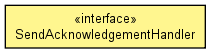

org.hornetq.api.core.client
Interface SendAcknowledgementHandler
public interface SendAcknowledgementHandler

A SendAcknowledgementHandler notifies a client when an message sent asynchronously has been received by the server.
If the session is not blocking when sending durable or non-durable messages, the session can
set a SendAcknowledgementHandler to be notified later when the messages
has been received by the server. The method sendAcknowledged will be called with the message that
was sent asynchronously.
- Author:
- Tim Fox
|
Method Summary |
void |
sendAcknowledged(Message message)
Notifies the client that a message sent asynchronously has been received by the server. |
sendAcknowledged
void sendAcknowledged(Message message)
- Notifies the client that a message sent asynchronously has been received by the server.
- Parameters:
message - message sent asynchronously
Copyright © 2009 Red Hat Inc. All Rights Reserved.